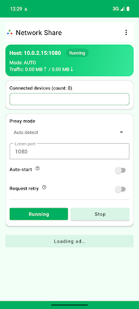

Supports full‑tunnel VPN proxy and LAN proxy; set host IP + port as needed.
Purpose
Use this device as a LAN proxy gateway on the same Wi‑Fi/hotspot; other devices forward traffic via this host (can stack with host VPN). Supports simultaneous connections from multiple devices.
Configuration parameters

Host: 10.0.2.15:1080 Host IP: 10.0.2.15 App port: 1080 Replace the example IP and port with your device's actual values. If the Listener Port is unavailable or in use, choose any port between 1024–49151; functionality is the same.
Host (with VPN) steps
Open the app, pick proxy mode (recommend “Auto-detect”) and port (default 1080).
Ensure host and clients are on the same LAN; port not occupied.
Tap “Start Gateway” and keep the foreground service alive.
Full‑tunnel VPN proxy
Install Clash on another device, download the generated YAML first, then import it in Clash via file import (direct link subscription is not supported currently). Use this when you want full‑device VPN proxying. The IP and port must match the host (with VPN) service you started.
Other devices: fill host IP + port in HTTP/HTTPS/SOCKS5 proxy settings supported by the device/app.
Enhanced mode
Some VPNs block inbound connections from other LAN devices, so they cannot reach the proxy service on this host and VPN sharing fails. Enhanced mode adds a companion device and moves the proxy service to that device. This host (with VPN) connects out to the companion device, brings the data back, and then performs requests locally.
If other LAN devices still cannot access the proxy after correct settings, enable Enhanced mode. The companion device can also set up a proxy like other clients to use the VPN from the main device.
Important: If the companion device also needs Clash full‑tunnel VPN, turn off VPN and connect to the main device first, then enable VPN after the connection succeeds. Device role detection currently depends on whether VPN is enabled.
استخدم الجهاز كبوابة وكيل داخل نفس شبكة Wi‑Fi/نقطة الاتصال؛ تُمرَّر حركة الأجهزة الأخرى عبر هذا المضيف (يمكن تكديس VPN المضيف). يدعم الاتصال المتزامن لعدة أجهزة.
شرح معلمات الإعداد
المضيف: 10.0.2.15:1080 عنوان IP للمضيف: 10.0.2.15 منفذ التطبيق: 1080 استبدل قيم IP والمنفذ في المثال بالقيم الفعلية لجهازك. إذا أظهر Listener Port أنه غير متاح أو قيد الاستخدام، فاختر أي منفذ بين 1024–49151؛ لا يوجد فرق في الوظيفة.
خطوات المضيف (مع VPN)
افتح التطبيق، واختر وضع الوكيل (يُنصح بـ “اكتشاف تلقائي”) والمنفذ (الافتراضي 1080). الإصدار الحالي يوجّه كل الحركة عبر الوكيل.
تأكد أن المضيف والعميل على نفس شبكة LAN وأن المنفذ غير مشغول.
اضغط “بدء البوابة” وابقَ على الخدمة في الواجهة.
وكيل VPN كامل النطاق
ثبّت Clash على جهاز آخر، ثم نزّل ملف YAML المُنشأ أولًا، وبعدها استورده في Clash عبر استيراد ملف (الاشتراك المباشر عبر الرابط غير مدعوم حاليًا). استخدمه عندما تريد توجيه كل حركة الجهاز عبر الـVPN. يجب أن يطابق عنوان IP والمنفذ خدمة المضيف (مع VPN) التي قمت بتشغيلها.
أجهزة أخرى: أدخل IP المضيف + المنفذ في إعدادات وكيل HTTP/HTTPS/SOCKS5 المدعومة.
الوضع المعزز
تمنع بعض شبكات VPN الاتصالات الواردة من أجهزة LAN الأخرى، لذلك لا يمكنها الوصول إلى خدمة الوكيل على هذا المضيف وتفشل مشاركة VPN. يضيف الوضع المعزز جهازًا مساعدًا وينقل خدمة الوكيل إليه. يتصل هذا المضيف (مع VPN) بالخارج بجهاز المساعدة، يعيد البيانات ثم ينفّذ الطلبات محليًا.
إذا لم تتمكن أجهزة LAN الأخرى من الوصول إلى الوكيل بعد الإعداد الصحيح، فعّل الوضع المعزز. يمكن للجهاز المساعد إعداد الوكيل مثل باقي الأجهزة لاستخدام VPN على الجهاز الرئيسي.
مهم: إذا كان جهاز المساعدة يحتاج أيضًا إلى وكيل VPN كامل النطاق عبر Clash، فأوقف الـVPN أولًا واتصل بالجهاز الرئيسي، ثم فعّل الـVPN بعد نجاح الاتصال. يعتمد تحديد الدور حاليًا على ما إذا كان الـVPN مفعّلًا.
Zweck
Nutze dieses Gerät im selben Wi‑Fi/Hotspot als LAN‑Proxy-Gateway; andere Geräte leiten den Verkehr über diesen Host (VPN des Hosts kann gestapelt werden). Unterstützt gleichzeitige Verbindungen mehrerer Geräte.
Konfigurationsparameter
Host: 10.0.2.15:1080 Host-IP: 10.0.2.15 App-Port: 1080 Ersetze die Beispiel‑IP und den Port durch die tatsächlichen Werte deines Geräts. Wenn der Listener-Port nicht verfügbar oder belegt ist, wähle einen beliebigen Port zwischen 1024–49151; die Funktion bleibt gleich.
Schritte auf dem Host (mit VPN)
App öffnen, Proxy-Modus wählen (empfohlen „Automatisch erkennen“) und Port wählen (Standard 1080). Aktuelle Version routet den gesamten Verkehr über den Proxy.
Sicherstellen, dass Host und Clients im selben LAN sind und der Port frei ist.
„Gateway starten“ tippen und den Vordergrunddienst aktiv lassen.
Volltunnel‑VPN‑Proxy
Installiere Clash auf einem anderen Gerät, lade die erzeugte YAML‑Datei zuerst herunter und importiere sie dann in Clash per Dateiimport (direktes Link‑Abonnement wird derzeit nicht unterstützt). Für vollständiges Geräte‑Routing. IP und Port müssen mit dem gestarteten Host‑Dienst (mit VPN) übereinstimmen.
Andere Geräte: Host-IP + Port in den HTTP/HTTPS/SOCKS5-Proxyfeldern des Geräts/der App eintragen.
Erweiterter Modus
Einige VPNs blockieren eingehende Verbindungen von anderen LAN‑Geräten, sodass diese den Proxy‑Dienst auf diesem Host nicht erreichen und das VPN‑Sharing fehlschlägt. Der erweiterte Modus fügt ein Begleitgerät hinzu und verlagert den Proxy‑Dienst dorthin. Dieser Host (mit VPN) verbindet sich ausgehend mit dem Begleitgerät, bringt die Daten zurück und führt die Anfragen lokal aus.
Wenn andere LAN‑Geräte trotz korrekter Einstellungen nicht auf den Proxy zugreifen können, aktiviere den erweiterten Modus. Das Begleitgerät kann wie andere Clients einen Proxy einrichten, um das VPN des Hauptgeräts zu nutzen.
Wichtig: Wenn das Begleitgerät ebenfalls den Clash‑Volltunnel‑VPN‑Proxy nutzen soll, schalte das VPN zuerst aus und stelle die Verbindung zum Hauptgerät her; aktiviere das VPN erst nach erfolgreicher Verbindung. Die Geräteerkennung basiert derzeit darauf, ob VPN aktiviert ist.
Propósito
Usa este dispositivo como puerta de enlace proxy en la misma red Wi‑Fi/punto de acceso; los demás equipos envían su tráfico a través de este host (puede combinarse con la VPN del host). Admite conexiones simultáneas de varios dispositivos.
Parámetros de configuración
Host: 10.0.2.15:1080 IP del host: 10.0.2.15 Puerto de la app: 1080 Sustituye la IP y el puerto de ejemplo por los valores reales de tu dispositivo. Si el Listener Port no está disponible o está en uso, elige cualquier puerto entre 1024–49151; la funcionalidad es la misma.
Pasos en el host (con VPN)
Abre la app, elige el modo de proxy (se recomienda “Detección automática”) y el puerto (predeterminado 1080). La versión actual dirige todo el tráfico por el proxy.
Asegúrate de que el host y los clientes estén en la misma LAN y que el puerto esté libre.
Toca “Iniciar gateway” y mantén vivo el servicio en primer plano.
Proxy VPN de túnel completo
Instala Clash en otro dispositivo, descarga primero el YAML generado y luego impórtalo en Clash mediante importación de archivo (la suscripción directa por enlace no es compatible por ahora). Úsalo cuando necesites proxy a nivel de todo el dispositivo. La IP y el puerto deben coincidir con el servicio del host (con VPN) que iniciaste.
Android: Detalles de Wi‑Fi → Proxy = Manual; host = IP de este dispositivo, puerto = puerto de la app. O configura HTTP/HTTPS en las apps.
iOS: Ajustes → Wi‑Fi → red actual → Configurar proxy = Manual; servidor = IP del host, puerto = puerto de la app (HTTP/HTTPS).
Windows: Configuración → Red e Internet → Proxy → Manual; dirección = IP del host, puerto = puerto de la app (HTTP/HTTPS); excepciones del proxy: localhost;127.*;192.168.*;10.*;172.16.*;172.17.*;172.18.*;172.19.*;172.20.*;172.21.*;172.22.*;172.23.*;172.24.*;172.25.*;172.26.*;172.27.*;172.28.*;172.29.*;172.30.*;172.31.*.
macOS: Ajustes del sistema → Red → interfaz actual → Detalles → Proxies; marca HTTP/HTTPS (o SOCKS5), servidor = IP del host, puerto = puerto de la app.
Otros dispositivos: introduce IP del host + puerto en los ajustes de proxy HTTP/HTTPS/SOCKS5 que el equipo o la app admitan.
Modo mejorado
Algunas VPN bloquean las conexiones entrantes de otros dispositivos de la LAN, por lo que no pueden acceder al servicio de proxy en este host y el uso compartido de VPN falla. El modo mejorado añade un dispositivo colaborador y traslada allí el servicio de proxy. Este host (con VPN) se conecta hacia afuera al dispositivo colaborador, trae los datos y luego realiza las solicitudes localmente.
Si otros dispositivos de la LAN aún no pueden acceder al proxy con la configuración correcta, activa el modo mejorado. El dispositivo colaborador puede configurar el proxy como los demás equipos para usar la VPN del dispositivo principal.
Importante: Si el dispositivo colaborador también necesita el proxy VPN de túnel completo con Clash, primero desactiva el VPN y conéctalo al dispositivo principal; después de conectar correctamente, activa el VPN. La detección del rol del dispositivo actualmente depende de si el VPN está activado.
هدف
از این دستگاه در همان شبکه Wi‑Fi/هاتاسپات بهعنوان درگاه پروکسی LAN استفاده کنید؛ ترافیک سایر دستگاهها از این میزبان عبور میکند (میتوان آن را با VPN میزبان ترکیب کرد). از اتصال همزمان چند دستگاه پشتیبانی میکند.
پارامترهای پیکربندی
میزبان: 10.0.2.15:1080 IP میزبان: 10.0.2.15 پورت برنامه: 1080 آیپی و پورت نمونه را با مقادیر واقعی دستگاه خود جایگزین کنید. اگر Listener Port در دسترس نبود یا اشغال بود، هر پورتی بین 1024–49151 را انتخاب کنید؛ عملکرد تفاوتی ندارد.
مراحل میزبان (با VPN)
اپ را باز کنید، حالت پروکسی (پیشنهاد «تشخیص خودکار») و پورت (پیشفرض 1080) را برگزینید. نسخه فعلی تمام ترافیک را از طریق پروکسی هدایت میکند.
مطمئن شوید میزبان و کلاینت در یک LAN هستند و پورت اشغال نشده است.
روی «شروع درگاه» بزنید و سرویس پیشزمینه را فعال نگه دارید.
پروکسی VPN تمامترافیک
روی یک دستگاه دیگر Clash را نصب کنید، ابتدا فایل YAML تولیدشده را دانلود کنید و سپس از طریق ایمپورت فایل در Clash اضافه کنید (در حال حاضر اشتراک مستقیم از طریق لینک پشتیبانی نمیشود). مناسب برای پروکسی سراسری دستگاه. IP و پورت باید با سرویس میزبان (با VPN) که اجرا کردهاید یکسان باشد.
دستگاههای دیگر: در تنظیمات پروکسی HTTP/HTTPS/SOCKS5 پشتیبانیشده، IP میزبان + پورت را وارد کنید.
حالت تقویتشده
برخی VPNها اتصالهای ورودی از دستگاههای دیگر در LAN را مسدود میکنند، بنابراین دستگاهها نمیتوانند به سرویس پراکسی روی این میزبان دسترسی پیدا کنند و اشتراک VPN از کار میافتد. حالت تقویتشده یک دستگاه همکار اضافه میکند و سرویس پراکسی را به آن منتقل میکند. این میزبان (با VPN) بهصورت خروجی به دستگاه همکار متصل میشود، داده را برمیگرداند و سپس درخواستها را محلی انجام میدهد.
اگر دستگاههای دیگر LAN با وجود تنظیمات صحیح هنوز به پراکسی دسترسی ندارند، حالت تقویتشده را فعال کنید. دستگاه همکار میتواند مانند سایر دستگاهها پراکسی را تنظیم کند و از VPN دستگاه اصلی استفاده کند.
مهم: اگر دستگاه همکار هم نیاز به پراکسی VPN تمامترافیک Clash دارد، ابتدا VPN را خاموش کرده و به دستگاه اصلی متصل شوید، سپس پس از اتصال موفق VPN را روشن کنید. تشخیص نقش دستگاهها در حال حاضر براساس فعال بودن VPN است.
Objet
Utilisez cet appareil comme passerelle proxy LAN sur le même Wi‑Fi/point d’accès ; les autres appareils font transiter leur trafic via cet hôte (VPN du serveur hôte possible). Prend en charge les connexions simultanées de plusieurs appareils.
Paramètres de configuration
Hôte : 10.0.2.15:1080 IP de l’hôte : 10.0.2.15 Port de l’app : 1080 Remplacez l’IP et le port d’exemple par les valeurs réelles de votre appareil. Si le Listener Port est indisponible ou occupé, choisissez n’importe quel port entre 1024–49151 ; la fonctionnalité est identique.
Étapes côté hôte (avec VPN)
Ouvrez l’app, choisissez le mode proxy (recommandé « Détection auto ») et le port (1080 par défaut). La version actuelle force tout le trafic via ce proxy.
Vérifiez que l’hôte et les clients sont sur le même LAN et que le port est libre.
Appuyez sur « Démarrer la passerelle » et maintenez le service au premier plan.
Proxy VPN tunnel complet
Installez Clash sur un autre appareil, téléchargez d’abord le YAML généré, puis importez‑le dans Clash via l’import de fichier (l’abonnement direct par lien n’est pas pris en charge pour l’instant). À utiliser pour un proxy global de l’appareil. L’IP et le port doivent correspondre au service hôte (avec VPN) démarré.
Android : Détails Wi‑Fi → Proxy = Manuel ; hôte = IP de cet appareil, port = port de l’app. Ou renseignez HTTP/HTTPS dans les apps.
iOS : Réglages → Wi‑Fi → réseau actuel → Configurer le proxy = Manuel ; serveur = IP hôte, port = port de l’app (HTTP/HTTPS).
Windows : Paramètres → Réseau et Internet → Proxy → Manuel ; adresse = IP hôte, port = port de l’app (HTTP/HTTPS) ; exceptions proxy : localhost;127.*;192.168.*;10.*;172.16.*;172.17.*;172.18.*;172.19.*;172.20.*;172.21.*;172.22.*;172.23.*;172.24.*;172.25.*;172.26.*;172.27.*;172.28.*;172.29.*;172.30.*;172.31.*.
macOS : Réglages Système → Réseau → interface actuelle → Détails → Proxys ; cochez HTTP/HTTPS (ou SOCKS5), serveur = IP hôte, port = port de l’app.
Autres appareils : renseignez IP hôte + port dans les paramètres proxy HTTP/HTTPS/SOCKS5 pris en charge.
Mode renforcé
Certains VPN bloquent les connexions entrantes des autres appareils du LAN, ce qui empêche d’atteindre le service proxy sur cet hôte et fait échouer le partage VPN. Le mode renforcé ajoute un appareil compagnon et déplace le service proxy dessus. Cet hôte (avec VPN) se connecte en sortie à l’appareil compagnon, récupère les données puis effectue les requêtes localement.
Si les autres appareils du LAN ne peuvent toujours pas accéder au proxy malgré une configuration correcte, activez le mode renforcé. L’appareil compagnon peut configurer le proxy comme les autres clients afin d’utiliser le VPN de l’appareil principal.
Important : si l’appareil compagnon doit aussi utiliser le proxy VPN tunnel complet via Clash, désactivez d’abord le VPN et connectez‑vous à l’appareil principal, puis réactivez le VPN après la connexion. La détection du rôle de l’appareil dépend actuellement du statut VPN.
उद्देश्य
उसी Wi‑Fi/हॉटस्पॉट में इस डिवाइस को LAN प्रॉक्सी गेटवे बनाएं; अन्य डिवाइस का ट्रैफ़िक इस होस्ट से होकर गुजरता है (होस्ट VPN को जोड़ सकते हैं)। कई डिवाइस एक साथ कनेक्ट हो सकते हैं।
कॉन्फ़िगरेशन पैरामीटर
होस्ट: 10.0.2.15:1080 होस्ट IP: 10.0.2.15 ऐप पोर्ट: 1080 उदाहरण IP और पोर्ट को अपने डिवाइस के वास्तविक मानों से बदलें। यदि Listener Port उपलब्ध नहीं है या उपयोग में है, तो 1024–49151 के बीच कोई भी पोर्ट चुनें; कार्यक्षमता समान रहती है।
होस्ट के चरण (VPN के साथ)
ऐप खोलें, प्रॉक्सी मोड चुनें (अनुशंसित “ऑटो-डिटेक्ट”) और पोर्ट चुनें (डिफ़ॉल्ट 1080)। वर्तमान संस्करण पूरा ट्रैफ़िक प्रॉक्सी से भेजता है।
सुनिश्चित करें कि होस्ट और क्लाइंट एक ही LAN पर हैं और पोर्ट खाली है।
“गेटवे शुरू करें” टैप करें और फोरग्राउंड सेवा को चालू रखें।
फुल‑टनल VPN प्रॉक्सी
किसी अन्य डिवाइस पर Clash इंस्टॉल करें, पहले जनरेट किए YAML को डाउनलोड करें और फिर Clash में फ़ाइल इम्पोर्ट से जोड़ें (लिंक से सीधे सब्सक्रिप्शन अभी समर्थित नहीं है)। जब आपको पूरे डिवाइस का प्रॉक्सी चाहिए तब उपयोग करें। IP और पोर्ट वही होने चाहिए जो होस्ट (VPN सहित) पर चालू सेवा में हैं।
अन्य डिवाइस: समर्थित HTTP/HTTPS/SOCKS5 प्रॉक्सी सेटिंग में होस्ट IP + पोर्ट भरें।
एन्हांस्ड मोड
कुछ VPN अन्य LAN डिवाइसों से आने वाले इनबाउंड कनेक्शन को ब्लॉक करते हैं, इसलिए वे इस होस्ट पर चल रहे प्रॉक्सी सर्विस तक नहीं पहुंच पाते और VPN शेयरिंग विफल हो जाती है। एन्हांस्ड मोड एक सहयोगी डिवाइस जोड़ता है और प्रॉक्सी सर्विस को उस डिवाइस पर शिफ्ट करता है। यह होस्ट (VPN के साथ) उस सहयोगी डिवाइस से आउटबाउंड कनेक्शन करता है, डेटा वापस लाता है और फिर लोकल रूप से अनुरोध करता है।
यदि सही सेटिंग्स के बाद भी अन्य LAN डिवाइस प्रॉक्सी तक नहीं पहुंच पा रहे हों, तो एन्हांस्ड मोड चालू करें। सहयोगी डिवाइस अन्य डिवाइस की तरह प्रॉक्सी सेट करके मुख्य डिवाइस का VPN उपयोग कर सकता है।
महत्वपूर्ण: यदि सहयोगी डिवाइस को भी Clash फुल‑टनल VPN प्रॉक्सी चाहिए, तो पहले VPN बंद करके मुख्य डिवाइस से कनेक्ट करें, कनेक्शन सफल होने के बाद VPN चालू करें। डिवाइस भूमिका की पहचान फिलहाल VPN के चालू होने पर निर्भर है।
Tujuan
Gunakan perangkat ini sebagai gateway proxy LAN pada Wi‑Fi/hotspot yang sama; perangkat lain meneruskan trafik lewat host ini (bisa ditumpuk dengan VPN host). Mendukung koneksi simultan banyak perangkat.
Parameter konfigurasi
Host: 10.0.2.15:1080 IP host: 10.0.2.15 Port aplikasi: 1080 Ganti IP dan port contoh dengan nilai sebenarnya di perangkat Anda. Jika Listener Port tidak tersedia atau sedang dipakai, pilih port apa pun antara 1024–49151; fungsinya sama.
Langkah di host (dengan VPN)
Buka app, pilih mode proxy (disarankan “Deteksi otomatis”) dan port (default 1080). Versi sekarang memaksa seluruh trafik lewat proxy.
Pastikan host dan klien berada pada LAN yang sama dan port tidak dipakai.
Ketuk “Mulai Gateway” dan biarkan layanan foreground tetap aktif.
Proxy VPN full‑tunnel
Instal Clash di perangkat lain, unduh dulu YAML yang dibuat, lalu impor di Clash lewat impor file (langganan langsung lewat tautan belum didukung). Cocok untuk proxy seluruh perangkat. IP dan port harus sama dengan layanan host (dengan VPN) yang kamu jalankan.
Perangkat lain: isi IP host + port di pengaturan proxy HTTP/HTTPS/SOCKS5 yang didukung.
Mode diperkuat
Beberapa VPN memblokir koneksi masuk dari perangkat LAN lain sehingga perangkat tidak dapat menjangkau layanan proxy di host ini dan berbagi VPN gagal. Mode diperkuat menambahkan perangkat pendamping dan memindahkan layanan proxy ke perangkat tersebut. Host ini (dengan VPN) menghubungi perangkat pendamping secara keluar, membawa kembali data, lalu menjalankan permintaan secara lokal.
Jika perangkat LAN lain tetap tidak bisa mengakses proxy setelah pengaturan benar, aktifkan Mode diperkuat. Perangkat pendamping bisa mengatur proxy seperti perangkat lain untuk menggunakan VPN dari perangkat utama.
Penting: Jika perangkat pendamping juga perlu proxy VPN full‑tunnel Clash, matikan VPN terlebih dulu dan hubungkan ke perangkat utama, lalu nyalakan VPN setelah koneksi berhasil. Pendeteksian peran perangkat saat ini bergantung pada status VPN.
目的
同一の Wi‑Fi/ホットスポット内で本機を LAN プロキシ・ゲートウェイとして使用し、他のデバイスの通信を本機経由で転送します（ホストの VPN と併用可）。複数デバイスの同時接続に対応します。
동일한 Wi‑Fi/핫스팟에서 이 기기를 LAN 프록시 게이트웨이로 사용하여 다른 장치의 트래픽을 이 호스트로 전달합니다(호스트 VPN과 함께 사용 가능). 여러 장치의 동시 연결을 지원합니다.
구성 파라미터
호스트: 10.0.2.15:1080 호스트 IP: 10.0.2.15 앱 포트: 1080 예시 IP와 포트를 기기 실제 값으로 변경하세요. Listener Port가 사용 불가 또는 사용 중으로 표시되면 1024–49151 사이의 아무 포트나 선택해도 됩니다. 기능 차이는 없습니다.
호스트 단계(VPN 사용)
앱을 열어 프록시 모드(“자동 감지” 권장)와 포트(기본 1080)를 선택합니다. 현재 버전은 전체 트래픽을 프록시로 보냅니다.
호스트와 클라이언트가 같은 LAN에 있고 포트가 비어 있는지 확인합니다.
“게이트웨이 시작”을 눌러 포그라운드 서비스를 유지합니다.
전체 터널 VPN 프록시
다른 기기에 Clash를 설치하고 생성된 YAML을 먼저 다운로드한 뒤 Clash에서 파일 가져오기로 불러오세요(링크 직접 구독은 현재 지원되지 않습니다). 기기 전체 프록시가 필요할 때 사용하세요. IP와 포트는 호스트( VPN 사용 )에서 실행한 서비스와 일치해야 합니다.
Android: Wi‑Fi 세부정보 → 프록시 = 수동; 호스트 = 이 기기 IP, 포트 = 앱 포트. 또는 앱의 HTTP/HTTPS 항목에 입력.
iOS: 설정 → Wi‑Fi → 현재 네트워크 → 프록시 구성 = 수동; 서버 = 호스트 IP, 포트 = 앱 포트(HTTP/HTTPS).
Windows: 설정 → 네트워크 및 인터넷 → 프록시 → 수동; 주소 = 호스트 IP, 포트 = 앱 포트(HTTP/HTTPS). 프록시 제외: localhost;127.*;192.168.*;10.*;172.16.*;172.17.*;172.18.*;172.19.*;172.20.*;172.21.*;172.22.*;172.23.*;172.24.*;172.25.*;172.26.*;172.27.*;172.28.*;172.29.*;172.30.*;172.31.*.
macOS: 시스템 설정 → 네트워크 → 현재 인터페이스 → 세부사항 → 프록시; HTTP/HTTPS(또는 SOCKS5) 선택, 서버 = 호스트 IP, 포트 = 앱 포트.
기타 장치: 기기/앱에서 지원하는 HTTP/HTTPS/SOCKS5 프록시 설정에 호스트 IP + 포트를 입력합니다.
향상 모드
일부 VPN은 다른 LAN 기기에서 들어오는 인바운드 연결을 차단해 이 호스트의 프록시 서비스에 접근하지 못하고 VPN 공유가 실패합니다. 향상 모드는 협력 기기를 추가해 프록시 서비스를 그 기기로 옮깁니다. 이 호스트(VPN 사용 중)가 협력 기기로 아웃바운드 연결해 데이터를 가져온 뒤 로컬에서 요청을 수행합니다.
정상적으로 설정했는데도 다른 LAN 기기가 프록시에 접속하지 못하면 향상 모드를 켜세요. 협력 기기도 다른 장치처럼 프록시를 설정해 메인 장치의 VPN을 사용할 수 있습니다.
중요: 협력 기기에서도 Clash 전체 터널 VPN 프록시를 사용해야 한다면, 먼저 VPN을 끄고 메인 기기와 연결한 뒤 연결이 성공하면 VPN을 켜세요. 현재 기기 구분은 VPN 사용 여부로 판단합니다.
Tujuan
Gunakan peranti ini sebagai gerbang proksi LAN pada Wi‑Fi/hotspot yang sama; trafik peranti lain dihantar melalui hos ini (boleh digabung dengan VPN hos). Menyokong sambungan serentak berbilang peranti.
Parameter konfigurasi
Hos: 10.0.2.15:1080 IP hos: 10.0.2.15 Port aplikasi: 1080 Gantikan IP dan port contoh dengan nilai sebenar peranti anda. Jika Listener Port tidak tersedia atau sedang digunakan, pilih mana-mana port antara 1024–49151; fungsinya sama.
Langkah hos (dengan VPN)
Buka app, pilih mod proksi (disyorkan “Auto-detect”) dan port (lalai 1080). Versi semasa memaksa semua trafik melalui proksi.
Pastikan hos dan klien berada dalam LAN yang sama dan port tidak digunakan.
Ketik “Mulakan Gateway” dan kekalkan perkhidmatan latar depan.
Proksi VPN terowong penuh
Pasang Clash pada peranti lain, muat turun dahulu YAML yang dijana, kemudian import di Clash melalui import fail (langganan terus melalui pautan belum disokong). Sesuai untuk proksi seluruh peranti. IP dan port mesti sepadan dengan servis hos (dengan VPN) yang anda jalankan.
Peranti lain: isi IP hos + port dalam tetapan proksi HTTP/HTTPS/SOCKS5 yang disokong.
Mod dipertingkat
Sesetengah VPN menyekat sambungan masuk daripada peranti LAN lain, jadi peranti tidak dapat mengakses perkhidmatan proksi pada hos ini dan perkongsian VPN gagal. Mod dipertingkat menambah peranti rakan dan memindahkan perkhidmatan proksi ke peranti tersebut. Hos ini (dengan VPN) membuat sambungan keluar ke peranti rakan, membawa data balik, kemudian membuat permintaan secara tempatan.
Jika peranti LAN lain masih tidak dapat mengakses proksi selepas tetapan betul, aktifkan Mod dipertingkat. Peranti rakan boleh menetapkan proksi seperti peranti lain untuk menggunakan VPN peranti utama.
Penting: Jika peranti rakan juga perlu proksi VPN terowong penuh Clash, matikan VPN dahulu dan sambungkan ke peranti utama, kemudian hidupkan VPN selepas sambungan berjaya. Pengenalpastian peranan peranti kini bergantung pada status VPN.
Objetivo
Use este dispositivo na mesma rede Wi‑Fi/ponto de acesso como gateway proxy LAN; outros dispositivos enviam o tráfego por este host (pode ser combinado com a VPN do host). Suporta conexões simultâneas de vários dispositivos.
Parâmetros de configuração
Host: 10.0.2.15:1080 IP do host: 10.0.2.15 Porta do app: 1080 Substitua o IP e a porta de exemplo pelos valores reais do seu dispositivo. Se o Listener Port estiver indisponível ou em uso, escolha qualquer porta entre 1024–49151; a funcionalidade é a mesma.
Passos no host (com VPN)
Abra o app, escolha o modo de proxy (recomendado “Detecção automática”) e a porta (padrão 1080). A versão atual força todo o tráfego pelo proxy.
Certifique-se de que host e clientes estejam na mesma LAN e que a porta não esteja ocupada.
Toque em “Iniciar gateway” e mantenha o serviço em primeiro plano ativo.
Proxy VPN de túnel completo
Instale o Clash em outro dispositivo, baixe primeiro o YAML gerado e depois importe-o no Clash por importação de arquivo (a assinatura direta por link não é suportada no momento). Use quando precisar de proxy no dispositivo inteiro. O IP e a porta devem corresponder ao serviço do host (com VPN) que você iniciou.
Android: Detalhes do Wi‑Fi → Proxy = Manual; host = IP deste dispositivo, porta = porta do app. Ou preencha HTTP/HTTPS nos apps.
iOS: Ajustes → Wi‑Fi → rede atual → Configurar Proxy = Manual; servidor = IP do host, porta = porta do app (HTTP/HTTPS).
Windows: Configurações → Rede e Internet → Proxy → Manual; endereço = IP do host, porta = porta do app (HTTP/HTTPS); exceções de proxy: localhost;127.*;192.168.*;10.*;172.16.*;172.17.*;172.18.*;172.19.*;172.20.*;172.21.*;172.22.*;172.23.*;172.24.*;172.25.*;172.26.*;172.27.*;172.28.*;172.29.*;172.30.*;172.31.*.
macOS: Ajustes do Sistema → Rede → interface atual → Detalhes → Proxies; marque HTTP/HTTPS (ou SOCKS5), servidor = IP do host, porta = porta do app.
Outros dispositivos: preencha IP do host + porta nas configurações de proxy HTTP/HTTPS/SOCKS5 suportadas.
Modo aprimorado
Algumas VPNs bloqueiam conexões de entrada de outros dispositivos da LAN, então eles não conseguem acessar o serviço de proxy neste host e o compartilhamento de VPN falha. O modo aprimorado adiciona um dispositivo auxiliar e move o serviço de proxy para esse dispositivo. Este host (com VPN) se conecta de saída ao dispositivo auxiliar, traz os dados de volta e então executa as requisições localmente.
Se outros dispositivos da LAN ainda não conseguirem acessar o proxy após a configuração correta, ative o modo aprimorado. O dispositivo auxiliar pode configurar o proxy como os demais dispositivos para usar a VPN do dispositivo principal.
Importante: Se o dispositivo auxiliar também precisar do proxy VPN de túnel completo do Clash, desative o VPN primeiro e conecte-se ao dispositivo principal; após a conexão bem‑sucedida, ative o VPN. A detecção do papel do dispositivo atualmente depende de o VPN estar ativo.
Назначение
Используйте это устройство в той же сети Wi‑Fi/точке доступа как шлюз LAN‑прокси; трафик других устройств проходит через этот хост (можно комбинировать с VPN хоста). Поддерживаются одновременные подключения нескольких устройств.
Параметры конфигурации
Хост: 10.0.2.15:1080 IP хоста: 10.0.2.15 Порт приложения: 1080 Замените пример IP и порт на реальные значения вашего устройства. Если Listener Port недоступен или занят, выберите любой порт в диапазоне 1024–49151 — функциональность не меняется.
Шаги на хосте (с VPN)
Откройте приложение, выберите режим прокси (рекомендуется «Автоопределение») и порт (по умолчанию 1080). Текущая версия направляет весь трафик через прокси.
Убедитесь, что хост и клиенты в одной LAN и что порт не занят.
Нажмите «Запустить шлюз» и держите foreground‑сервис активным.
Полнотуннельный VPN‑прокси
Установите Clash на другом устройстве, сначала скачайте созданный YAML, затем импортируйте его в Clash через импорт файла (прямая подписка по ссылке сейчас не поддерживается). Используйте, когда нужен прокси для всего устройства. IP и порт должны совпадать с запущенной на хосте (с VPN) службой.
Android: сведения о Wi‑Fi → Прокси = Вручную; хост = IP этого устройства, порт = порт приложения. Или заполните HTTP/HTTPS в приложениях.
iOS: Настройки → Wi‑Fi → текущая сеть → Настроить прокси = Вручную; сервер = IP хоста, порт = порт приложения (HTTP/HTTPS).
Windows: Настройки → Сеть и Интернет → Прокси → Вручную; адрес = IP хоста, порт = порт приложения (HTTP/HTTPS); исключения прокси: localhost;127.*;192.168.*;10.*;172.16.*;172.17.*;172.18.*;172.19.*;172.20.*;172.21.*;172.22.*;172.23.*;172.24.*;172.25.*;172.26.*;172.27.*;172.28.*;172.29.*;172.30.*;172.31.*.
macOS: Настройки системы → Сеть → текущий интерфейс → Подробнее → Прокси; отметьте HTTP/HTTPS (или SOCKS5), сервер = IP хоста, порт = порт приложения.
Другие устройства: в полях прокси HTTP/HTTPS/SOCKS5 устройства/приложения укажите IP хоста + порт.
Усиленный режим
Некоторые VPN блокируют входящие подключения от других устройств в LAN, поэтому они не могут достучаться до прокси‑сервиса на этом хосте и общий доступ к VPN не работает. Усиленный режим добавляет устройство‑партнёр и переносит на него прокси‑сервис. Этот хост (с VPN) исходящим подключением обращается к устройству‑партнёру, забирает данные и затем выполняет запросы локально.
Если другие устройства LAN всё равно не могут получить доступ к прокси при корректных настройках, включите усиленный режим. Устройство‑партнёр может настроить прокси как другие устройства и использовать VPN основного устройства.
Важно: если устройству‑партнёру тоже нужен полнотуннельный VPN‑прокси в Clash, сначала отключите VPN и подключитесь к основному устройству, а после успешного подключения включите VPN. Сейчас определение роли устройства зависит от того, включён ли VPN.
Kusudi
Tumia kifaa hiki kama lango la proksi la LAN katika Wi‑Fi/hotspot ile ile; trafiki ya vifaa vingine hupitia kwa host huyu (inaweza kuunganishwa na VPN ya host). Inasaidia kuunganisha vifaa vingi kwa wakati mmoja.
Vigezo vya usanidi
Hosti: 10.0.2.15:1080 IP ya hosti: 10.0.2.15 Bandari ya programu: 1080 Badilisha IP na bandari ya mfano na thamani halisi za kifaa chako. Ikiwa Listener Port haipatikani au inatumika, chagua bandari yoyote kati ya 1024–49151; utendaji ni sawa.
Hatua za host (na VPN)
Fungua app, chagua hali ya proksi (inapendekezwa “Utambuzi otomatiki”) na bandari (chaguo-msingi 1080). Toleo la sasa hupitisha trafiki yote kupitia proksi.
Hakikisheni host na wateja wako LAN moja na bandari haijatumika.
Bofya “Anzisha Gateway” na uache huduma ya foreground iendelee.
Proksi ya VPN full‑tunnel
Sakinisha Clash kwenye kifaa kingine, pakua kwanza YAML iliyotengenezwa, kisha ulete kwenye Clash kwa kuingiza faili (usajili wa moja kwa moja kupitia kiungo hauauniwi kwa sasa). Tumia unapohitaji proksi ya kifaa chote. IP na port lazima vilingane na huduma ya host (yenye VPN) uliyowasha.
Android: Maelezo ya Wi‑Fi → Proksi = Manual; host = IP ya kifaa hiki, bandari = bandari ya app. Au jaza HTTP/HTTPS ndani ya app.
iOS: Settings → Wi‑Fi → mtandao wa sasa → Configure Proxy = Manual; seva = IP ya host, bandari = bandari ya app (HTTP/HTTPS).
Windows: Settings → Network & Internet → Proxy → Manual; anwani = IP ya host, bandari = bandari ya app (HTTP/HTTPS); orodha ya kuacha: localhost;127.*;192.168.*;10.*;172.16.*;172.17.*;172.18.*;172.19.*;172.20.*;172.21.*;172.22.*;172.23.*;172.24.*;172.25.*;172.26.*;172.27.*;172.28.*;172.29.*;172.30.*;172.31.*.
macOS: System Settings → Network → kiolesura cha sasa → Details → Proxies; tiki HTTP/HTTPS (au SOCKS5), seva = IP ya host, bandari = bandari ya app.
Vifaa vingine: ingiza IP ya host + bandari kwenye mipangilio ya proksi ya HTTP/HTTPS/SOCKS5 inayotolewa.
Hali iliyoimarishwa
Baadhi ya VPN huzuia miunganisho inayoingia kutoka kwa vifaa vingine vya LAN, hivyo haviwezi kufikia huduma ya proksi kwenye host hii na ushiriki wa VPN hushindikana. Hali iliyoimarishwa huongeza kifaa mshirika na kuhamisha huduma ya proksi kwenda kwenye kifaa hicho. Host hii (yenye VPN) huunganishwa kwa njia ya kutoka kwenda kwenye kifaa mshirika, hurejesha data kisha hufanya maombi ndani ya kifaa.
Ikiwa vifaa vingine vya LAN bado haviwezi kufikia proksi baada ya mipangilio sahihi, washa Hali iliyoimarishwa. Kifaa mshirika kinaweza kusanidi proksi kama vifaa vingine ili kutumia VPN ya kifaa kikuu.
Muhimu: Ikiwa kifaa mshirika pia kinahitaji proksi ya VPN full‑tunnel ya Clash, zima VPN kwanza na uunganishe kwenye kifaa kikuu, kisha washa VPN baada ya muunganisho kufanikiwa. Utambuzi wa majukumu ya vifaa kwa sasa unategemea ikiwa VPN imewashwa.
วัตถุประสงค์
ใช้เครื่องนี้เป็นเกตเวย์พร็อกซี LAN ในเครือข่าย Wi‑Fi/ฮอตสปอตเดียวกัน เพื่อให้อุปกรณ์อื่นส่งทราฟฟิกผ่านโฮสต์นี้ (ใช้ร่วมกับ VPN ของโฮสต์ได้) รองรับการเชื่อมต่อพร้อมกันหลายอุปกรณ์.
พารามิเตอร์การตั้งค่า
โฮสต์: 10.0.2.15:1080 IP โฮสต์: 10.0.2.15 พอร์ตแอป: 1080 โปรดแทนที่ IP และพอร์ตตัวอย่างด้วยค่าจริงของอุปกรณ์คุณ หาก Listener Port ไม่พร้อมใช้งานหรือถูกใช้งานอยู่ ให้เลือกพอร์ตใดก็ได้ระหว่าง 1024–49151; การทำงานเหมือนเดิม.
Gamitin ang aparatong ito bilang LAN proxy gateway sa parehong Wi‑Fi/hotspot; dumaraan ang trapiko ng ibang device sa host na ito (puwedeng isabay sa VPN ng host). Sinusuportahan ang sabayang koneksyon ng maraming device.
Mga parameter ng pagsasaayos
Host: 10.0.2.15:1080 IP ng host: 10.0.2.15 Port ng app: 1080 Palitan ang halimbawang IP at port ng aktuwal na halaga ng iyong device. Kung hindi available o ginagamit ang Listener Port, pumili ng alinmang port mula 1024–49151; pareho ang functionality.
Mga hakbang ng host (may VPN)
Buksan ang app, piliin ang mode ng proxy (inirerekomenda ang “Auto-detect”) at ang port (default 1080). Sa kasalukuyang bersyon, lahat ng trapiko ay dumadaan sa proxy.
Tiyaking nasa parehong LAN ang host at mga kliyente at hindi ginagamit ang port.
Pindutin ang “Start Gateway” at panatilihing buhay ang foreground service.
Full‑tunnel VPN proxy
Mag‑install ng Clash sa ibang device, i‑download muna ang generated YAML, pagkatapos ay i‑import sa Clash gamit ang file import (hindi pa suportado ang direktang subscription sa link). Gamitin kapag kailangan ng full‑device proxy. Dapat tumugma ang IP at port sa serbisyong pinatakbo sa host (may VPN).
Android: Wi‑Fi details → Proxy = Manual; host = IP ng aparatong ito, port = port ng app. O punan ang HTTP/HTTPS sa mga app.
iOS: Settings → Wi‑Fi → kasalukuyang network → Configure Proxy = Manual; server = IP ng host, port = port ng app (HTTP/HTTPS).
Windows: Settings → Network & Internet → Proxy → Manual; address = IP ng host, port = port ng app (HTTP/HTTPS); proxy bypass: localhost;127.*;192.168.*;10.*;172.16.*;172.17.*;172.18.*;172.19.*;172.20.*;172.21.*;172.22.*;172.23.*;172.24.*;172.25.*;172.26.*;172.27.*;172.28.*;172.29.*;172.30.*;172.31.*.
macOS: System Settings → Network → kasalukuyang interface → Details → Proxies; piliin ang HTTP/HTTPS (o SOCKS5), server = IP ng host, port = port ng app.
Ibang device: ilagay ang IP ng host + port sa mga setting ng HTTP/HTTPS/SOCKS5 proxy na sinusuportahan ng device/app.
Pinalakas na mode
May ilang VPN na humaharang sa inbound na koneksyon mula sa ibang LAN device, kaya hindi nila maabot ang proxy service sa host na ito at pumapalya ang VPN sharing. Ang pinalakas na mode ay nagdaragdag ng katuwang na device at inililipat ang proxy service doon. Kumokonekta palabas ang host na ito (may VPN) sa katuwang na device, dinadala pabalik ang data, at saka gumagawa ng request nang lokal.
Kung hindi pa rin ma-access ng ibang LAN device ang proxy kahit tama ang settings, i-enable ang pinalakas na mode. Ang katuwang na device ay puwedeng mag-configure ng proxy tulad ng ibang device para magamit ang VPN ng pangunahing device.
Mahalaga: Kung kailangan din ng katuwang na device ang Clash full‑tunnel VPN proxy, patayin muna ang VPN at kumonekta sa pangunahing device, pagkatapos ay buksan ang VPN kapag matagumpay ang koneksyon. Ang pagtukoy sa papel ng device ay kasalukuyang nakabase sa kung naka‑VPN.
Amaç
Aynı Wi‑Fi/erişim noktasında bu cihazı LAN proxy geçidi olarak kullanın; diğer cihazların trafiği bu host üzerinden gider (host VPN’iyle birlikte kullanılabilir). Birden fazla cihazın aynı anda bağlanmasını destekler.
Yapılandırma parametreleri
Ana makine: 10.0.2.15:1080 Ana makine IP: 10.0.2.15 Uygulama portu: 1080 Örnek IP ve portu cihazınızın gerçek değerleriyle değiştirin. Listener Port kullanılamıyor veya meşgulse 1024–49151 arasından herhangi bir port seçin; işlev aynı kalır.
Host adımları (VPN ile)
Uygulamayı açın, proxy modunu seçin (“Otomatik algıla” önerilir) ve portu belirleyin (varsayılan 1080). Mevcut sürüm tüm trafiği proxy üzerinden yönlendirir.
Host ve istemcilerin aynı LAN’de olduğundan ve portun boş olduğundan emin olun.
“Gateway’i başlat”a dokunun ve ön plan servisini açık tutun.
Tam tünel VPN proxy
Başka bir cihaza Clash kurun, oluşturulan YAML’i önce indirin, ardından Clash’te dosya içe aktarma ile ekleyin (bağlantıdan doğrudan abonelik şu anda desteklenmiyor). Tüm cihaz için proxy gerektiğinde kullanın. IP ve port, hostta (VPN açıkken) başlattığınız hizmetle aynı olmalıdır.
Android: Wi‑Fi ayrıntıları → Proxy = Manuel; host = bu cihazın IP’si, port = uygulama portu. Ya da uygulamalarda HTTP/HTTPS alanlarını doldurun.
iOS: Ayarlar → Wi‑Fi → mevcut ağ → Proxy’yi Yapılandır = Manuel; sunucu = host IP’si, port = uygulama portu (HTTP/HTTPS).
Windows: Ayarlar → Ağ ve İnternet → Proxy → Manuel; adres = host IP’si, port = uygulama portu (HTTP/HTTPS); proxy hariç tutma: localhost;127.*;192.168.*;10.*;172.16.*;172.17.*;172.18.*;172.19.*;172.20.*;172.21.*;172.22.*;172.23.*;172.24.*;172.25.*;172.26.*;172.27.*;172.28.*;172.29.*;172.30.*;172.31.*.
macOS: Sistem Ayarları → Ağ → mevcut arayüz → Ayrıntılar → Proxyler; HTTP/HTTPS’yi (veya SOCKS5) işaretleyin, sunucu = host IP’si, port = uygulama portu.
Diğer cihazlar: Cihaz/uygulamanın desteklediği HTTP/HTTPS/SOCKS5 proxy alanlarına host IP + port yazın.
Gelişmiş mod
Bazı VPN’ler LAN içindeki diğer cihazlardan gelen gelen bağlantıları engeller; bu nedenle bu host üzerindeki proxy hizmetine erişemezler ve VPN paylaşımı başarısız olur. Gelişmiş mod bir yardımcı cihaz ekler ve proxy hizmetini bu cihaza taşır. Bu host (VPN ile) yardımcı cihaza dışarıdan bağlantı kurar, veriyi geri getirir ve ardından istekleri yerel olarak yürütür.
Doğru ayarlara rağmen diğer LAN cihazları proxy’ye erişemiyorsa gelişmiş modu etkinleştirin. Yardımcı cihaz, diğer cihazlar gibi proxy ayarlayıp ana cihazın VPN’ini kullanabilir.
Önemli: Yardımcı cihaz da Clash tam tünel VPN proxy kullanacaksa, önce VPN'i kapatıp ana cihaza bağlanın; bağlantı başarılı olduktan sonra VPN'i açın. Cihaz rolü şu anda VPN'in açık olup olmadığına göre belirlenir.
مقصد
اسی Wi‑Fi/ہاٹ اسپات پر اس ڈیوائس کو LAN پراکسی گیٹ وے کے طور پر استعمال کریں؛ دیگر ڈیوائسز کی ٹریفک اس ہوسٹ سے گزرے گی (ہوسٹ VPN کے ساتھ مل کر استعمال کیا جا سکتا ہے)۔ ایک ہی وقت میں متعدد ڈیوائسز کے کنکشن کی سپورٹ ہے۔
ترتیباتی پیرامیٹرز
ہوسٹ: 10.0.2.15:1080 ہوسٹ IP: 10.0.2.15 ایپ پورٹ: 1080 مثالی IP اور پورٹ کو اپنے ڈیوائس کی اصل قدروں سے بدلیں۔ اگر Listener Port دستیاب نہ ہو یا مصروف ہو تو 1024–49151 کے درمیان کوئی بھی پورٹ منتخب کریں؛ فنکشن میں کوئی فرق نہیں۔
ہوسٹ کے مراحل (VPN کے ساتھ)
ایپ کھولیں، پراکسی موڈ منتخب کریں (تجویز “آٹو ڈٹیکٹ”) اور پورٹ منتخب کریں (ڈیفالٹ 1080)۔ موجودہ ورژن ساری ٹریفک پراکسی سے گزارتا ہے۔
یقین کریں کہ ہوسٹ اور کلائنٹس ایک ہی LAN پر ہیں اور پورٹ خالی ہے۔
“گیٹ وے شروع کریں” پر ٹیپ کریں اور فورگراؤنڈ سروس کو جاری رکھیں۔
فل ٹنل VPN پراکسی
دوسرے ڈیوائس پر Clash انسٹال کریں، پہلے تیار شدہ YAML فائل ڈاؤن لوڈ کریں، پھر Clash میں فائل امپورٹ کے ذریعے شامل کریں (لنک سے براہِ راست سبسکرپشن فی الحال سپورٹڈ نہیں ہے)۔ جب پورے ڈیوائس کا پراکسی چاہیے تو استعمال کریں۔ IP اور پورٹ کو میزبان (VPN کے ساتھ) پر چلائی گئی سروس کے مطابق رکھیں۔
دیگر ڈیوائسز: ڈیوائس/ایپ کی HTTP/HTTPS/SOCKS5 پراکسی سیٹنگ میں ہوسٹ IP + پورٹ لکھیں۔
اینہانسڈ موڈ
کچھ VPN دیگر LAN ڈیوائسز سے آنے والی اِن باؤنڈ کنکشنز کو بلاک کر دیتے ہیں، جس سے وہ اس ہوسٹ پر موجود پراکسی سروس تک نہیں پہنچ پاتیں اور VPN شیئرنگ ناکام ہو جاتی ہے۔ اینہانسڈ موڈ ایک معاون ڈیوائس شامل کرتا ہے اور پراکسی سروس کو اس ڈیوائس پر منتقل کر دیتا ہے۔ یہ ہوسٹ (VPN کے ساتھ) معاون ڈیوائس سے آؤٹ باؤنڈ کنکشن کرتا ہے، ڈیٹا واپس لاتا ہے اور پھر مقامی طور پر ریکویسٹ کرتا ہے۔
اگر درست سیٹنگز کے باوجود دیگر LAN ڈیوائسز پراکسی تک نہیں پہنچ پا رہیں تو اینہانسڈ موڈ فعال کریں۔ معاون ڈیوائس بھی دیگر ڈیوائسز کی طرح پراکسی سیٹ کر کے مرکزی ڈیوائس کا VPN استعمال کر سکتی ہے۔
اہم: اگر معاون ڈیوائس کو بھی Clash فل ٹنل VPN پراکسی درکار ہو تو پہلے VPN بند کر کے مرکزی ڈیوائس سے کنکشن قائم کریں، پھر کنکشن کامیاب ہونے کے بعد VPN آن کریں۔ فی الحال ڈیوائس کی شناخت VPN کے فعال ہونے پر مبنی ہے۔
Mục đích
Dùng thiết bị này làm gateway proxy LAN trong cùng Wi‑Fi/điểm phát; lưu lượng của thiết bị khác sẽ đi qua máy chủ này (có thể dùng kèm VPN của máy chủ). Hỗ trợ kết nối đồng thời nhiều thiết bị.
Thông số cấu hình
Máy chủ: 10.0.2.15:1080 IP máy chủ: 10.0.2.15 Cổng ứng dụng: 1080 Hãy thay IP và cổng ví dụ bằng giá trị thực tế của thiết bị. Nếu Listener Port không khả dụng hoặc đang bị chiếm, hãy chọn bất kỳ cổng nào trong khoảng 1024–49151; chức năng không khác biệt.
Các bước trên máy chủ (có VPN)
Mở ứng dụng, chọn chế độ proxy (khuyến nghị “Tự động nhận diện”) và cổng (mặc định 1080). Phiên bản hiện tại đưa toàn bộ lưu lượng qua proxy.
Đảm bảo máy chủ và client cùng LAN và cổng không bị chiếm.
Nhấn “Khởi động gateway” và giữ dịch vụ nền trước hoạt động.
Proxy VPN full‑tunnel
Cài Clash trên thiết bị khác, tải trước YAML đã tạo rồi nhập vào Clash bằng chức năng import file (hiện chưa hỗ trợ đăng ký trực tiếp qua liên kết). Dùng khi cần proxy toàn bộ thiết bị. IP và cổng phải khớp với dịch vụ trên host (có VPN) mà bạn đã bật.
Thiết bị khác: điền IP host + cổng trong phần cấu hình proxy HTTP/HTTPS/SOCKS5 mà thiết bị/ứng dụng hỗ trợ.
Chế độ tăng cường
Một số VPN chặn kết nối vào từ thiết bị LAN khác, khiến chúng không thể truy cập dịch vụ proxy trên máy chủ này và việc chia sẻ VPN bị thất bại. Chế độ tăng cường thêm một thiết bị phối hợp và chuyển dịch vụ proxy sang thiết bị đó. Máy chủ này (có VPN) kết nối ra ngoài tới thiết bị phối hợp, mang dữ liệu về rồi mới thực hiện yêu cầu cục bộ.
Nếu các thiết bị LAN khác vẫn không truy cập được proxy dù đã cấu hình đúng, hãy bật Chế độ tăng cường. Thiết bị phối hợp có thể cấu hình proxy như các thiết bị khác để dùng VPN của thiết bị chính.
Quan trọng: Nếu thiết bị phối hợp cũng cần dùng proxy VPN full‑tunnel của Clash, hãy tắt VPN trước để kết nối với thiết bị chính, rồi bật VPN sau khi kết nối thành công. Việc phân biệt vai trò thiết bị hiện dựa trên việc VPN có bật hay không.